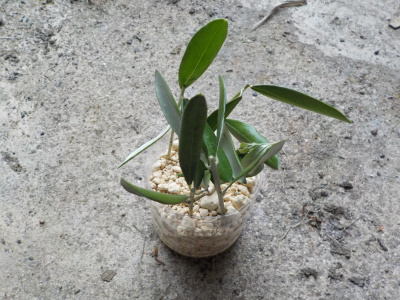
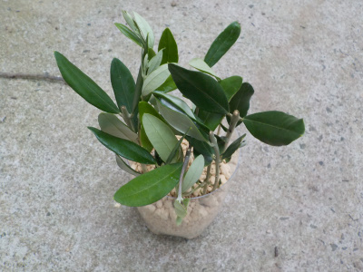
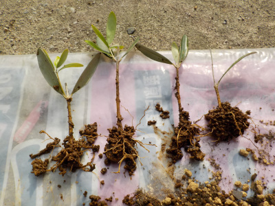
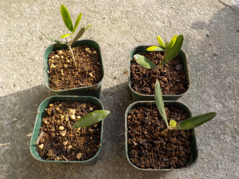
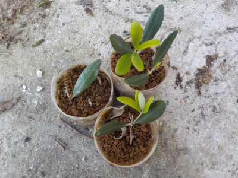
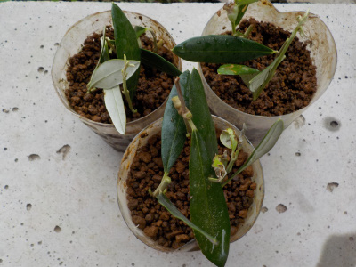
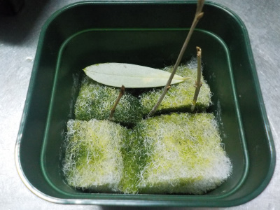
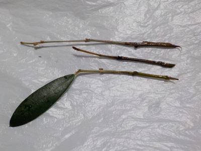
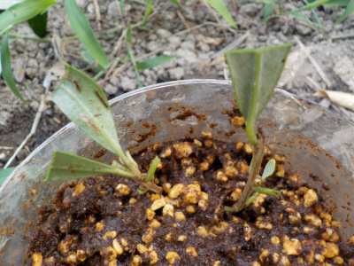

オリーブの挿し木を追加しました。
2021/07/03

今回は500ミリリットルのペットボトルなので、小さいいサイズの挿し木です。
挿し穂の大きさによる違いはたぶんありますよね。
大きい方が成功率が高そうな気がしますが、結果はどうなるでしょうね。
2021/07/03

今回は500ミリリットルのペットボトルなので、小さいいサイズの挿し木です。
挿し穂の大きさによる違いはたぶんありますよね。
大きい方が成功率が高そうな気がしますが、結果はどうなるでしょうね。
2021/06/27

もういらないって思っていましたが、オリーブは垣根にもなるみたいなので今年も挿し木で増やすことにしました。
今回は1，5リットルのペットボトルを用意したので、挿し木が前回より大きめです。
ペットボトルに10本くらい挿し木しました。
いらない枝を剪定すると思うので、その都度挿し木しようと思っています。
2021/05/23

オリーブの挿し木に4本成功しました。
失敗してからの成功なのでどってもうれしい。

大事に育てて大きくしたいです。
オリーブってもう増やす必要ってないかな。家に5本もあれば十分な気がします。
次は違う品種のオリーブを買って増やすか、実生を育てたいかな。
2021/01/31

7月に挿し木そしたオリーブです。
4本葉っぱが残っていて、3本は新芽が出ています。
成長して欲しいですね。
2020/07/04

どうなるかなー。
オリーブの挿し木の成功率ってどれくらいでしょうね。
2020/05/16

半年くらい付いていた葉っぱが落ちてしまいました。
枯れ木になりました。
しばらく放置してみまうが、枯れたんだろうな。
2020/02/27

1本は葉っぱが残っていて、茎が緑です。
でも根はありません。
このまま様子を見ます。
2019/11/02

ちょっと葉っぱがしおれました。
2019/10/20
スポンジを水に漬けて水挿しです。

これで根っこが出たら楽ちんでいいんだけどな。
2019/08/04
ブルベリーの挿し木と一緒に挿しました。

ついでです。
土が酸性だけど大丈夫かな？
（その後すぐに枯れました。）
オリーブは葉っぱが美しいいなんて言うけど、特別そんなこと思わない。
漬物を作って食べたい。